环境准备
Android Studio已安装NDK。
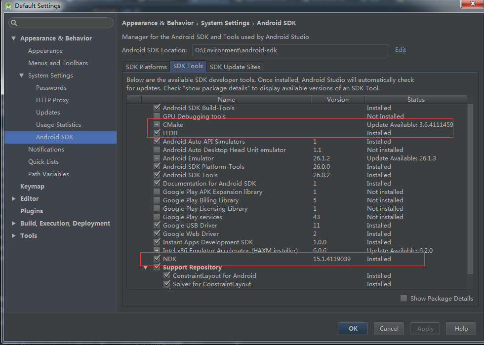
配置ndk-build的环境变量
Windows环境变量配置
- 新建系统变量
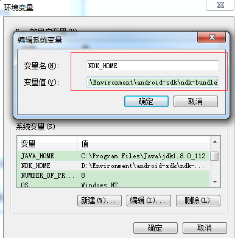
- 找到Path系统变量，添加
%NDK_HOME%;
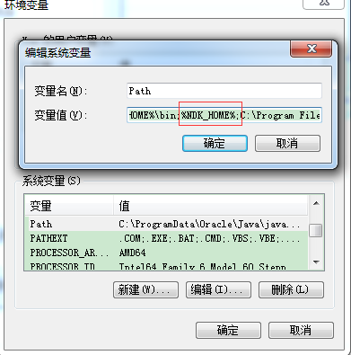
- 保存，打开cmd终端，输入ndk-build测试
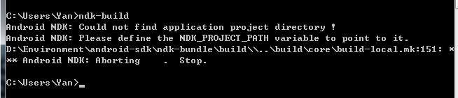
看到如图所示提示，即表示环境变量配置成功。
Mac环境变量配置
- 使用vim或者nano修改~/.bash_profile文件，添加ndk-build路径。
nano ~/.bash_profile
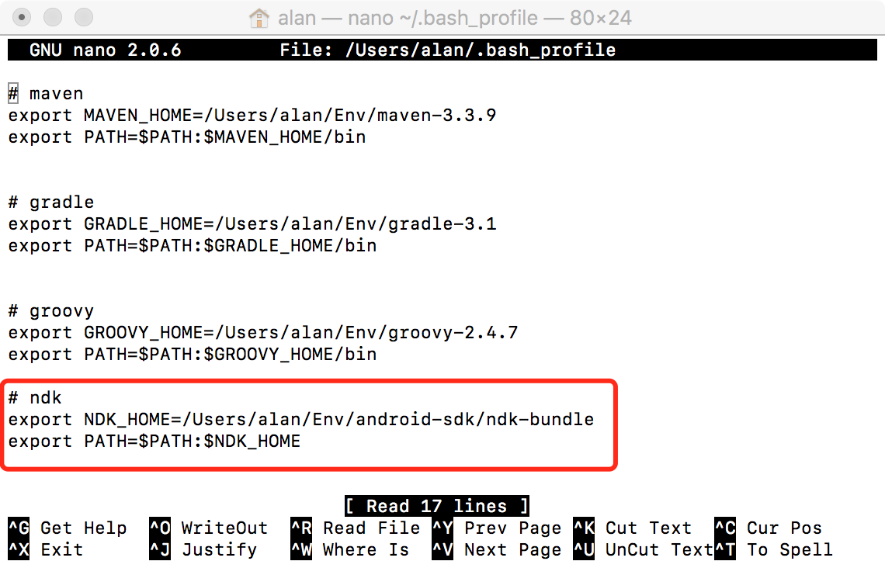
添加完点击control+x保存文件。
- 使用
source .bash_profile命令应用刚添加的配置 - 使用
ndk-build检测是否已配置成功
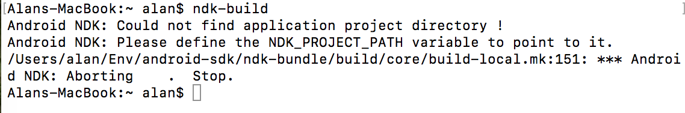
添加jni目录
在已创建的Android项目中src/main下面创建jni目录。
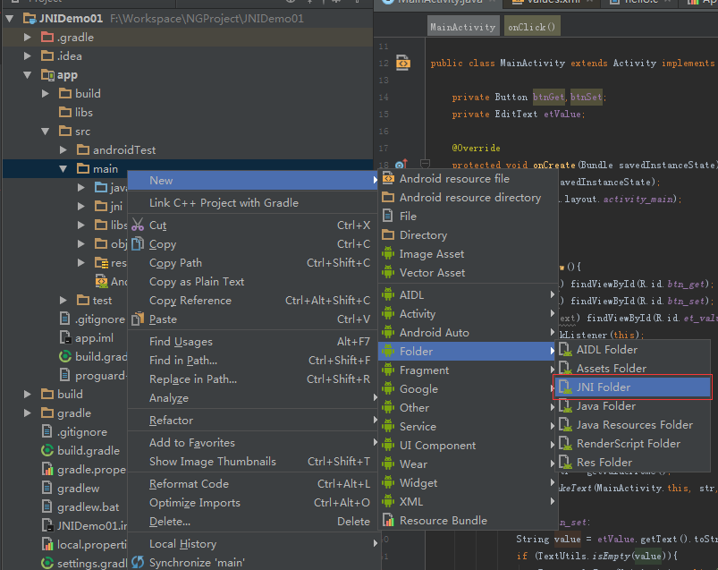
声明native方法
使用C/C++语言编写部分的代码，在java中均使用native修饰符修饰。
本demo中，我在MainActivity声明了两个native方法。
示例代码：
public class MainActivity extends Activity{
@Override
protected void onCreate(Bundle savedInstanceState) {
super.onCreate(savedInstanceState);
setContentView(R.layout.activity_main);
}
//从C文件获取值
public native String getValueFromC();
//实现将值传递给C
public native void setValueToC(String value);
}
生成头文件
jni本地函数命名规则是 Java_包名_native方法所在的类名_native方法名，为了因命名错误而导致一些不必要的异常，推荐使用javah命令来生成头文件。
进入项目目录app/src/main/java中，使用以下命令：
javah 包名.MainActivity
编写C代码
在jni目录下新建.c文件，并将刚刚生成的.h头文件的两个native方法拷贝进来。
#include <stdio.h>
#include <string.h>
#include <jni.h>
#include <android/log.h>
//宏定义，由于C中调用log的函数是__android_log_print()，为了简便，因此使用宏定义
#define LOG_TAG "C_LOG"
#define LOGI(...) __android_log_print(ANDROID_LOG_INFO, LOG_TAG, __VA_ARGS__)
//第一个参数JNIEnv* JNIEnv是一个结构体，里面定义了大量的函数指针，供开发使用。
//第二个参数是jobject 就是调用当前native方法的Java对象
JNIEXPORT jstring JNICALL Java_pub_yanng_jnidemo01_MainActivity_getValueFromC
(JNIEnv *env, jobject thiz){
//在LogCat中输出日志
LOGI("调用 C getValueFromC() 函数\n");
char *str = "Hello JNI，I'm from C";
//通过NewStringUTF函数将C的字符串转换成java的jstring类型。
return (*env)->NewStringUTF(env,str);
}
JNIEXPORT void JNICALL Java_pub_yanng_jnidemo01_MainActivity_setValueToC
(JNIEnv *env, jobject thiz, jstring str){
//在LogCat中输出日志
LOGI("调用 C setValueToC() 函数\n");
char *string = (char*)(*env)->GetStringUTFChars(env, str, NULL);
LOGI("您设置的值为：%s\n", string);
// 显示释放转换成UTf-8的string空间，如果不显示调用，JVM会一直保存该对象，不回收，容易导致内存溢出
(*env)->ReleaseStringUTFChars(env, str, string);
}
新建Android.mk文件
在jni目录中新建名为Android.mk的文件，并在文件中输入如下内容：
LOCAL_PATH := $(call my-dir)
include $(CLEAR_VARS)
LOCAL_MODULE := hello
LOCAL_SRC_FILES := hello.c
# 这句主要是因为使用了Android/log.h，因此需要加上这句
LOCAL_LDLIBS := -llog
include $(BUILD_SHARED_LIBRARY)
build.gradle
在app的build.gradle添加如图所示圈出来部分内容。
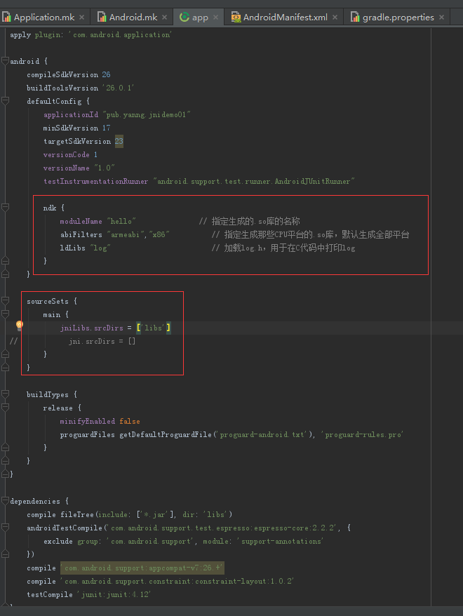
gradle.properties
为解决ndk提示版本低不能自动编译，可在gradle.properties文件中添加如下语句：
android.useDeprecatedNdk=true
执行ndk-build
打开命令行，cd到jni当前目录所在路径，命令行输入ndk-build
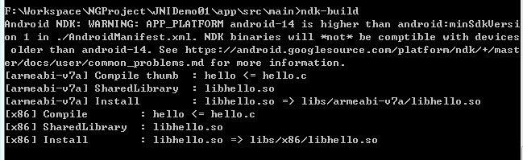
看到没有报错信息，并且提示生成.so文件，并且在项目的libs文件夹中会有生成的so文件，即表示生成.so文件成功。
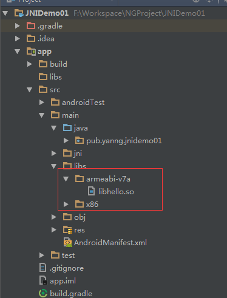
System.loadLibrary
在java代码中还需要使用System.loadLibrary加载so文件，如下代码所示：
static {
System.loadLibrary("hello");
}
其中hello就是Android.mk中定义的名字。
执行结果
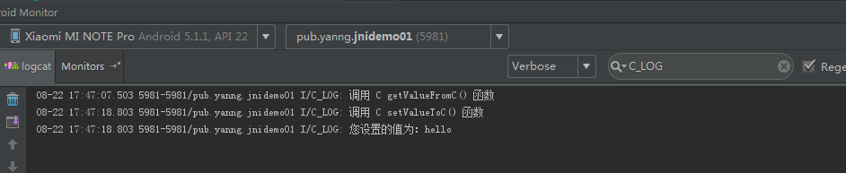
源代码：